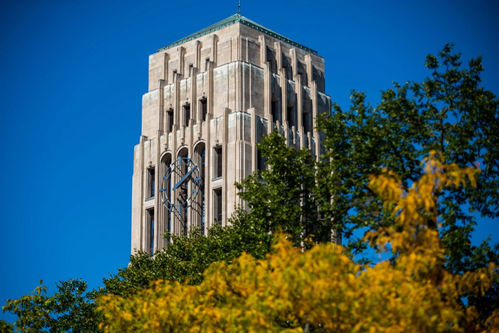

Understand Your Position
Consider how your identity, experiences, assumptions, and privileges may shape the way you understand the project and the people involved.


Transform your academic foundation into real-world impact. The UMSI Engaged Learning Office (ELO) guides you through the crucial stages of project work, from preparation and community context to teamwork, project management, reflection, and responsible closeout.
The UMSI Engaged Learning Office connects students with opportunities to apply classroom knowledge to real challenges. Engaged learning allows you to work with organizations, communities, project partners, and other stakeholders while developing skills that extend beyond the classroom.
Use this site as a guide throughout your experience. You can return to the stage that matches where you are in your project and find practical guidance, questions, resources, and tools to help you move forward.
Engaged learning differs from traditional classroom assignments. Students enter complex, unscripted environments where technical solutions intersect with human lives, organizational cultures, and community needs.
The beginning of an engaged learning experience is about more than deciding what your team will create. It is an opportunity to understand the people and communities connected to the work, reflect on your own assumptions, and establish expectations with your project partner.
Taking time to reflect on your positionality, assess your team's skills, and listen to your partner's goals can help prevent assumptions, misaligned expectations, and harm. Approaching partners as collaborative learners rather than outside experts can help create reciprocal relationships.
Real-world projects rarely follow a perfect plan. Use this resource to find guidance when you need it, so you can spend less time searching for materials and more time learning, collaborating, and moving your project forward.
Engaged learning is a process. Follow the stages below to find guidance that matches where you are in your experience.
Build your foundation before the project begins. Reflect on your identity and assumptions, learn about your project context, assess your team's readiness, and establish learning goals.
Establish professional communication, build a relationship with your project partner, clarify expectations, and create shared agreements about roles and responsibilities.
Conduct research, communicate with project sponsors, manage changing requirements, respond to feedback, and adapt to challenges as your project develops.
Complete a responsible handoff, evaluate your impact, reflect on your learning, and translate your experience into resumes, portfolios, interviews, and future opportunities.
Strong projects begin with strong preparation. Before you start developing a solution, take time to understand the organization, community, and people involved.
Consider how your identity, experiences, assumptions, and privileges may shape the way you understand the project and the people involved.

Learn about the organization, community, project history, stakeholders, and broader conditions surrounding the work.

Identify your team's skills, interests, availability, responsibilities, and areas where additional knowledge or support may be needed.
Your first conversations with a project partner can shape the rest of the experience. Use this stage to establish professional communication and shared expectations.

Introduce your team, communicate clearly, and establish an appropriate way to stay in contact with your partner.

Listen to your partner's goals, ask questions, clarify project boundaries, and identify next steps.

Discuss roles, responsibilities, timelines, communication, and the scope of the project.
Real-world projects change. Your team's ability to adapt, communicate, and respond to new information is an important part of engaged learning.

Use human-centered research methods to understand people, environments, activities, interactions, and emerging needs.

Keep sponsors and project partners informed about progress, challenges, decisions, and upcoming work.

Gather and evaluate feedback throughout the project. Use what you learn to improve the work and maintain alignment with partner needs.
Completing an engaged learning project means more than submitting a final deliverable. Responsible handoff, reflection, and evaluation help create lasting value.

Organize files, documentation, and project assets so that your partner can understand, maintain, and use the work after your team has moved on.

Think about the technical, professional, interpersonal, and ethical lessons you gained from the experience.

Turn your experience into resume bullets, portfolio case studies, interview stories, and future professional opportunities.
Explore opportunities to collaborate with organizations, communities, student teams, and partners in Michigan and beyond.
Work with a team on an applied artificial intelligence project for a partner organization.
Use information and data skills to help address challenges identified by community organizations.
Participate in a community-engaged learning experience during the University's fall break.
Collaborate with communities and nonprofit organizations on information-related projects during spring break.
Develop leadership and project-management skills while supporting engaged learning through a UMSI student organization.
Learn more about Student Organization Engaged Learning Leaders
Build intercultural awareness and apply your learning in an international setting.
Explore this video to learn more about engaged learning and the kinds of experiences available through UMSI.
Engaged learning experiences can help you develop skills that are valuable in academic, professional, and community settings.
The Engaged Learning Office works with partners across industries and sectors, from technology companies to grassroots nonprofits and cultural heritage institutions, to provide project-based opportunities for UMSI students.
ELO facilitates transformational engaged learning experiences and enables innovative, sustainable, and mutually beneficial information solutions for local and global communities.
The office supports students as they develop the skills and perspectives needed to work effectively with partners and communities.
You do not have to navigate an engaged learning experience alone. Use the resources throughout this site to find guidance for the stage of your project and the challenges you are experiencing.